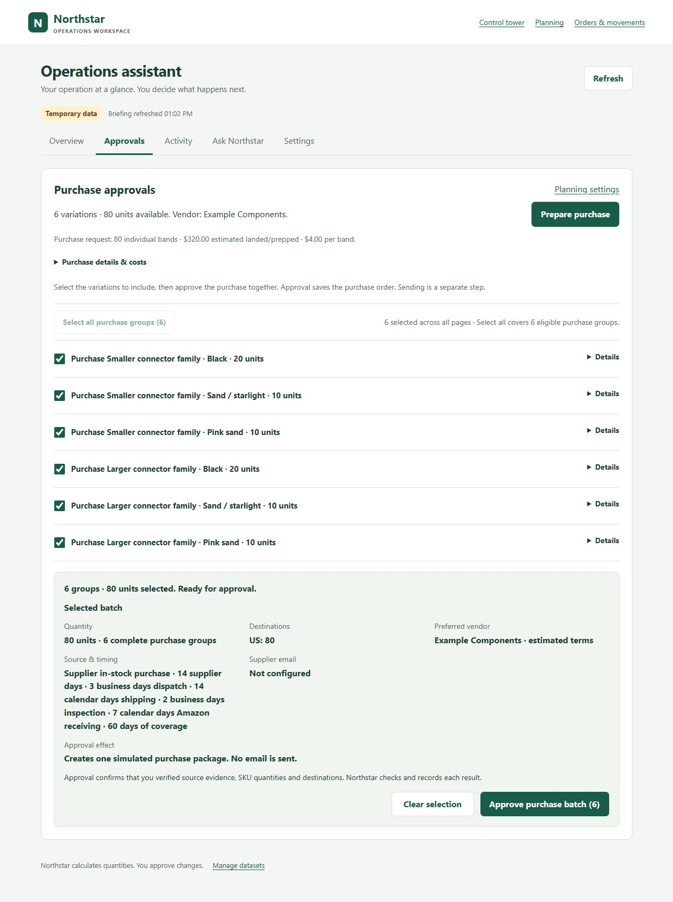
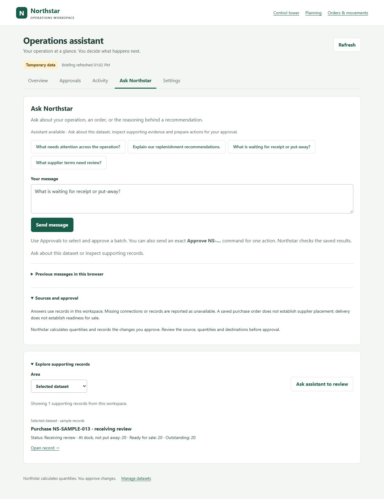

In development · Automation & agentic integration
Northstar Control Tower
An evolving operations application connecting planning, approved purchases, order progress, receiving, inventory, and an AI assistant. Built to make operational work understandable, reviewable, and traceable.
- Role
- Product designer, data modeler, and application developer
- Platform
- JavaScript, Python, SQLite, and AI integration
- Current stage
- Local application with an operations assistant and test partner adapters
- Public demo
- Current interface captures with fictional sample records

Project evolution
From replenishment planning to connected operations.
Northstar grew from my Multichannel Replenishment Control Tower: a prototype for connecting demand, inventory, purchasing, and receiving decisions. As the work developed, I began connecting those decisions into a shared operating workflow.
The current application carries saved orders through tracking, receiving, and inventory updates. An operations assistant adds a way to ask questions, inspect supporting records, and prepare supported next steps.
This is how I learn: build around a practical problem, test the workflow, refine it, and use what I learn to explore what could come next.
AI integration
An assistant grounded in the work.
I’m exploring agentic integration through an assistant that works with selected operational records and the application’s existing tools.
- Review the evidence. Explain records and flag issues using the selected workspace’s supporting information.
- Prepare a next step. Run supported checks and prepare actions while the existing planning engine supplies purchasing quantities.
- Keep approval explicit. A person approves through the application. The assistant cannot approve its own proposals.
- Follow the outcome. Keep order progress, receiving, inventory updates, and audit history connected in the operating workflow.
What I’m learning
Useful automation needs context and clear controls.
The interesting challenge is making AI useful inside a workflow people can understand and trust. That means showing where an answer came from, preserving business rules, checking whether information has changed, and making the approval and outcome visible.
Current development stage: Supplier, carrier, warehouse, and notification connections use test adapters. They exercise the application workflow without placing real partner orders or sending live notifications. The current walkthrough uses captures of the application interface with fictional sample records. Ask Northstar is shown before submission; the tour makes no live AI or partner requests.
Current interface
Review the action. Inspect the evidence.
Current application screens, captured with fictional records in the isolated UI preview. The six-stage tour includes full-size images, activity, planning, and vendor controls.


Earlier prototype: workflow, screens, and system design
Original design challenge
Turn fragmented inventory signals into controlled replenishment decisions.
A multichannel operation can hold inventory across regional 3PL locations and marketplace fulfillment networks while supplier lead times, inbound shipments, reserved stock, demand velocity, and receiving exceptions are changing at the same time.
The operating problem is not simply showing inventory. The system needs to explain why an action is recommended, distinguish supplier purchasing from network transfers, preserve human approval, and leave a traceable record of every decision.
Original prototype
One operating view from demand signal through approved replenishment action.
I designed the control tower as an offline demonstration environment with deterministic synthetic data. The interface brings executive monitoring, inventory positions, replenishment logic, purchase orders, FBA transfers, shipments, receiving, supplier performance, marketplace issues, scenarios, automation controls, and audit history into one workflow.
- 144 synthetic products across four regional 3PLs and four Amazon FBA marketplaces
- 1,152 inventory positions with searchable position-level detail and risk classification
- Separate supplier purchase-order and 3PL-to-FBA transfer recommendations
- Explainable reorder point, safety stock, target inventory, MOQ, and case-pack logic
- Approve, modify, reject, defer, and bulk-approve decision workflows
- Shipment tracking, receiving discrepancy resolution, supplier performance, and marketplace issue handling
- Adjustable growth, channel-mix, lead-time, service-level, and planning-horizon scenarios
- Manual, assisted, and controlled-batch operating modes with dry-run safeguards and audit history
Earlier prototype walkthrough
From inventory exposure to governed execution.
These views show the earlier synthetic control tower. They document the planning and approval workflows that formed the starting point for Northstar; they do not show its current operations assistant.
System design
Production-style boundaries without pretending the prototype is production.
The source dataset is generated from a fixed seed into a normalized SQLite database, then exported to browser-readable JavaScript and JSON snapshots. The UI reads through that data adapter so the browser demonstration remains self-contained and makes no network calls.
Workflow decisions persist only in local browser storage. The source SQLite data remains unchanged, allowing the operating dataset to be regenerated deterministically. That separation mirrors a future architecture where the local adapter can be replaced by a Flask service or authenticated API without redesigning the user workflow.
Decision logic
Recommendations remain inspectable before they become actions.
Inventory details expose on-hand, reserved, damaged, quarantined, confirmed inbound, current and projected days of supply, reorder point, target inventory, and net requirement. Recommended quantities are then adjusted to supplier MOQ and case-pack rules.
The recommendation drawer explains the calculation in plain language before an analyst approves or modifies it. Approved actions can then be grouped into a controlled review batch. Release is simulated and audited, but no supplier, Amazon, freight, email, or marketplace transaction is sent externally.
Synthetic operating scale
Large enough to expose real workflow and prioritization problems.
The demonstration dataset is calibrated to an established specialty-accessories business with approximately 238,000 annual synthetic units, about $6.2 million in synthetic revenue, and a channel mix weighted toward marketplace fulfillment.
Those values are planning assumptions rather than company claims. The purpose is to make the interface behave like an operating system with enough volume, exceptions, and competing priorities to demonstrate realistic decision support.
Portfolio note